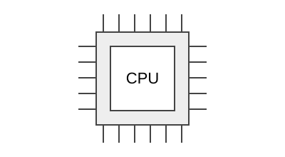

Процессор
Процессор выполняет команды программы: вычисляет значения, сравнивает данные и управляет порядком выполнения операций.
У процессора может быть несколько ядер. Это позволяет выполнять несколько задач одновременно. Во время работы процессор нагревается, поэтому ему требуется охлаждение.

Программы и данные, с которыми работает процессор, размещаются в оперативной памяти.